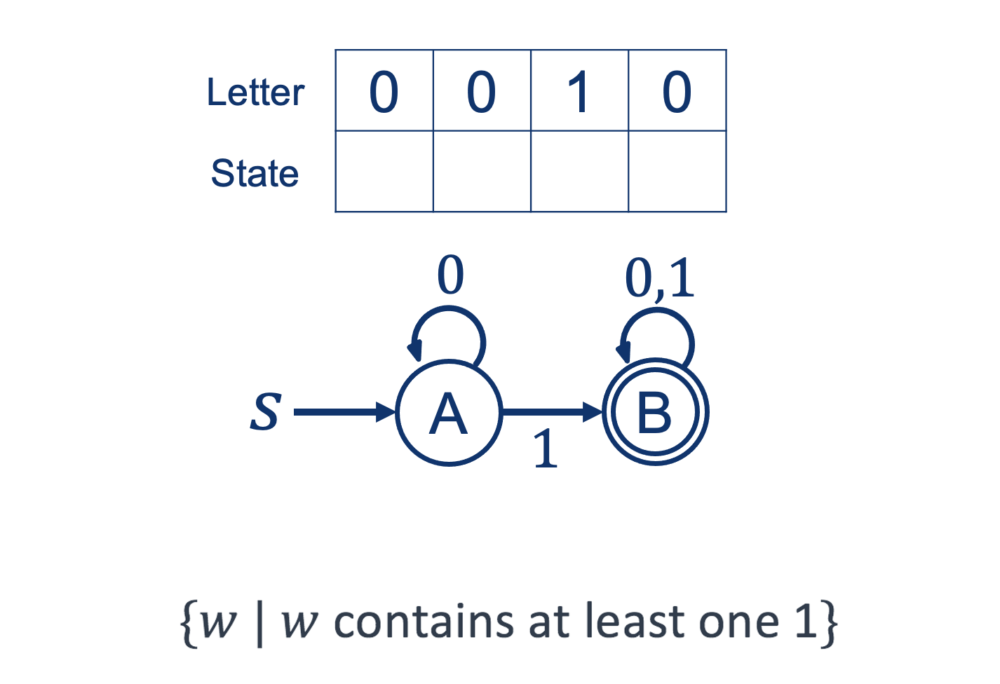
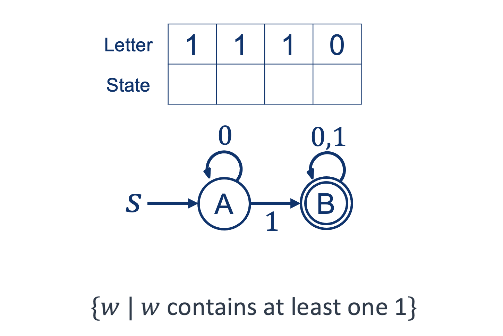
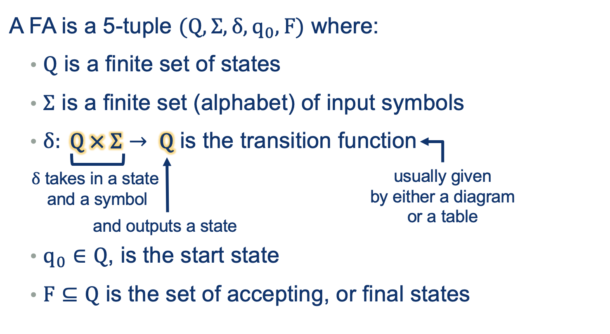
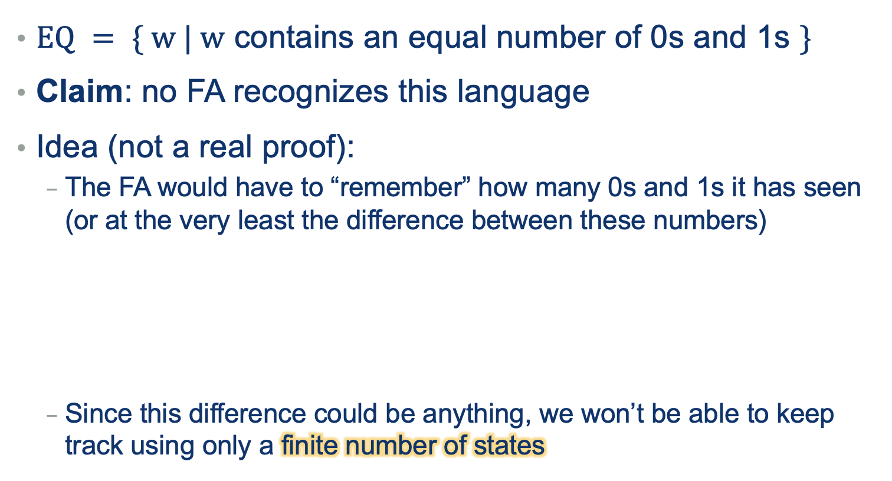
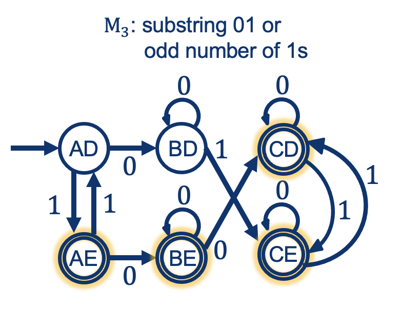

Lecture Notes 05:
Overleaf, RegEx-Recap, and Finite Automata
Outline
This class we'll discuss:
- Overleaf check
- Recap: RegEx (colorful example)
- Finite Automata (AKA Finite State Machines)
- Formal Definitions
- FA properties
Overleaf and Latex
Typesetting is not required: legibly-written-and-then-Typed (Word/OpenOffice/etc) submissions are totally fine;
Just PDF them before you submit, please!
However, LaTeX (Latex henceforth) is a powerful tool that lets you tweak and customize ad nauseam, which might be desirable to some of you.
Also, it is the defacto standard for most academic publications.
If you choose Latex, you should start very simply; learn:
- Titles and Sections
- bold and Italics
- List Environments
- Math Environment and symbols
Activity 0 [10 minutes]:
Follow along:
- Import the Zip file that contiains the necessary info for Problem Set 01: CSC250s22-A01.zip
- If you already have an Overleaf account with Smith, open it; Otherwise, go to Smith's Overleaf Intro page
- Press the "create a new paper" button: This will open a new latex project template that you can learn from (Do this later)
- Go to the top-left area and press the "UP ARROW": This will take you to your Overleaf main account page.
- On the left, press "New Project" and "Upload Projec"
- Drag and drop the Zip file you downloaded into the Upload Area
- Notice the Header document info (no need to edit this)
- Notice overall structrure: Header, document (with Sections)
- Go to the comment "Start here"
- Underr there, change the "YOUR NAME HERE" for your name, and the "COLLABORATORS' NAMES HERE" for your Teammate's names (if you have any; otherwise, replace with "WOrked Alone")
- Notice how the first question is written using Latex
- Go to the comment: "Write your answer to Q1 below"
- Replace the contents of the block that is between the tag \begin{solution} and the one called \end{solution} with your own answer. If you are citing info, use the recommended citation format.
- Try comment ing out a section using this symbol: %
- Let's write the answer to this question together!!
For tips on how to write symbols and environments (like equations, lists, or tables),
You can check out this
latex tutorial.
Recap: RegExes
Let's go over the following examples:
How about the Languages generated?
Regular Languages are more powerful than Finite Languages (can encompass more)

Still confused about RExs? Go to Office Hours with Winnie!! (and with me)
Algorithms: Code, RegExes, and Diagrams
As we saw above, an algorithm can be encoded as:
- RegEx
- (pseudo) Code
But we know that a piece of code can also be drawn using things like a "Flow Diagram"!
In this section, we'll use a special type of diagram called a
State Diagram.
State Diagram
A State diagram looks like this:

Finite Automaton AKA: Finite State Machine (FSM)
- Finite number of states
- Follows Rules that have been programmed beforehand

Operation Examples
Example 01: Processing a String

Example 02: Processing a String

Example 03: Processing a String

Activity 1 [2 minutes]:
Try to build your own machine. One that "Accepts" this set:
(Wait; then Click)

Alphabets and languages

Formal Definition

Our Last Example:
Operators in FSMs: OR
How might we handle a language that contains an or?
Example:
{w|w doesn’t contain either 00 or 11 as a substring}
Let's try one basic example:
Activity 2 [2 minutes]:
Explain the sequence of states for these words:
[2 minutes]:
Answer the following questions:
What is the descriptive power of Finite Automata?
(Wait; then Click)
We need to compare it with regular expressions... we'll do that bit by bit.
Are there languages that Cannot be described by a finite automaton?
(try to come up with a counter example)
(Wait; then Click)
YES! NON Regular Languages!

Useful Properties
These are some properties that can help you deduce, generalize, or analyze FSMs with respect to their RegEx and Regular Languages.
Complement
IF a Language \(L_1\) is recognizable by an FA \( M_1\),
is language \( (L_1)^{c} \) also recognizable by some FA?
Or in other words,
\[\exists M_2 \quad | \quad L(M_2) = L(M_1)^{c} \]

Intersection
Activity 4 [2 minutes]:
How would you prove this (by construction)?
(Wait; then Click)
- run both machines “in parallel”
- accept if (and only if) both reach an accepting state
Example:

Intersection: General Rule

Union
 Activity 5
Activity 5 [2 minutes]:
How would you prove this (by construction)?
(Wait; then Click)
- run both machines “in parallel”
- accept if either reach an accepting state
Example:

Union: General Rule

Next Class: DFA vs NFA vs RE!!
Before next class (Friday 02/04)
[Due for everyone]
Finish Problem Set 1 (Come to OHs if you want help!!)
[Optional]
TBD